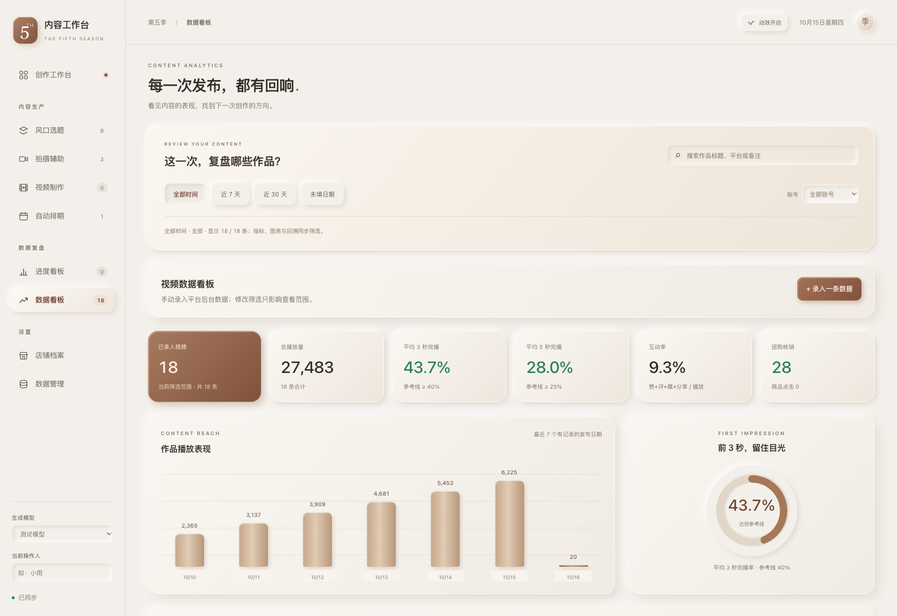
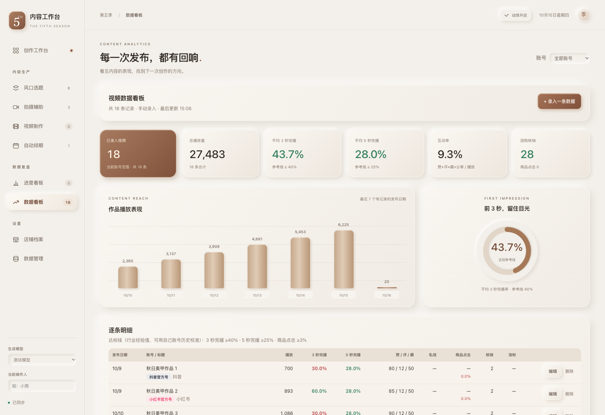
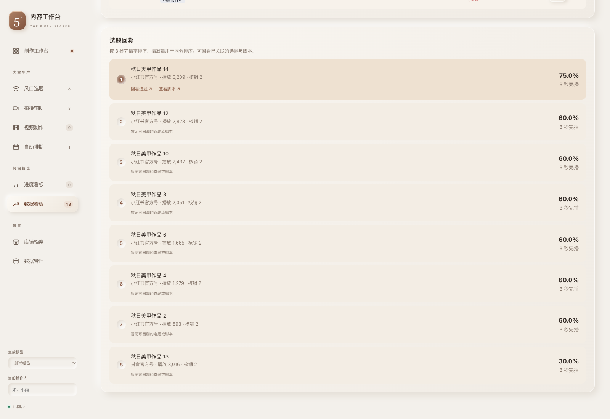
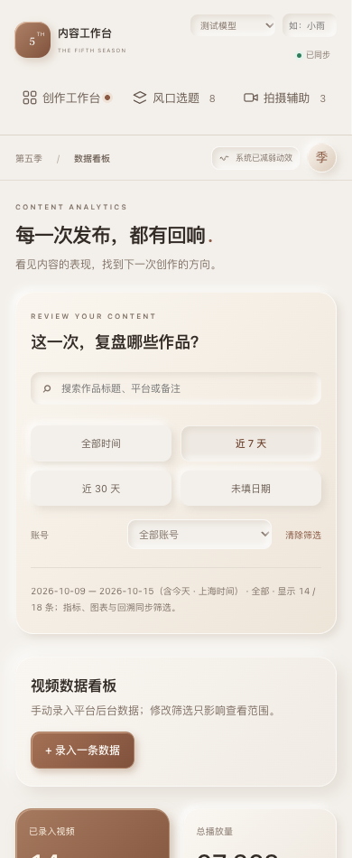

从作品表现，回到创作的起点。
选择复盘时间与账号，搜索作品；指标、图表与选题回溯同步更新。明细可按播放量与完播率排序。
以下为同一组隔离示例数据的实际浏览器截图，不连接云端。




近 7 / 30 天按上海日期计算并包含今天。清除筛选保留明细排序；回溯仅使用已有的排期关联。
选择复盘时间与账号，搜索作品；指标、图表与选题回溯同步更新。明细可按播放量与完播率排序。
以下为同一组隔离示例数据的实际浏览器截图，不连接云端。




近 7 / 30 天按上海日期计算并包含今天。清除筛选保留明细排序；回溯仅使用已有的排期关联。